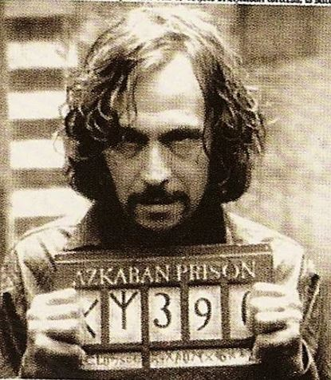

Sirius Black escaped from Azkaban

irius Black escape occurred shortly after Barty Crouch Jnr, Bellatrix, Rodolphus, and Rabastan Lestrange were sentenced to life imprisonment for the torture and permanent incapacitation of the Aurors Frank and Alice Longbottom. At the trial, Bartemius Crouch Snr, Barty's father, was one of the judges. Barty begged his father to set him free, but Crouch Snr felt betrayed by his son and thought he deserved to be punished and imprisoned. He gave his son a life term in Azkaban. By 31 July, Black took advantage of his extreme weight loss to slip through his cell door in his Animagus dog form. These ten were considered to be some of the most dangerous and highly guarded convicts due to their crimes being legendary. The escapees were high security prisoners being held on the top most floors of the prison and were sentenced to life within the walls of the fortress. Most of the escapees, as well as a few other Death Eaters life within the walls of the fortress. He gave his son a life term in Azkaban. By 31 July, Black took advantage of his extreme weight loss to slip through his cell door in his Animagus dog form. These ten were considered to be some of the most dangerous and highly guarded convicts due to their crimes being legendary.
In January 1996, a mass breakout from Azkaban set ten long-imprisoned Death Eaters loose. Lord Voldemort had little trouble arranging this, as many of the Dementors were happy to oblige his dark whims.Cornelius Fudge (who was at the time refusing to believe that Voldemort could have returned and leading the Ministry of Magic in a campaign to discredit Albus Dumbledore and Harry Potter for trying to prove the claim) expressed to Harry Potter for trying to prove the claim expressed to.
Cornelius Fudge (who was at the time refusing to believe that Voldemort could have returned and leading the Ministry of Magic in a campaign to discredit Albus Dumbledore and Harry Potter for trying to prove the claim) expressed to the Daily Prophet the Ministry's fear that Sirius Black was responsible for the incident.Many of the escapees participated in the meeting at Malfoy Manor that summer, in the Battle of the Seven Potters, the Fall of the Ministry of Magic, and eventually the Battle of Hogwarts.including all the escapees from the 1996 breakout who were re-imprisoned after the Ministry break-in, as well as others who had been imprisoned since. It was not reported to the public by the Ministry of Magic, due to their misguided attempt to keep the community under a false pretence of peace that Voldemort did.It was not reported to the public by the Ministry of Magic, due to their misguided attempt to keep the community under a false pretence of peace. Many of the escapees participated in the meeting at Malfoy Manor that summer, in the Battle of the Seven Potters, the Fall of the Ministry of Magic, and eventually the Battle of Hogwarts.including all the escapees from the 1996 breakout who were re-imprisoned after the Ministry break-in, as well as others who had been imprisoned